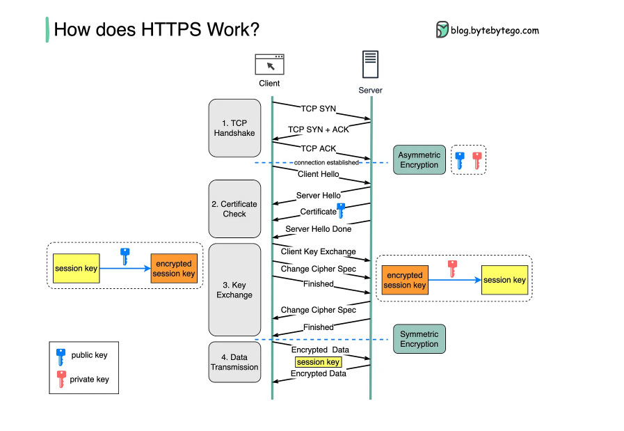
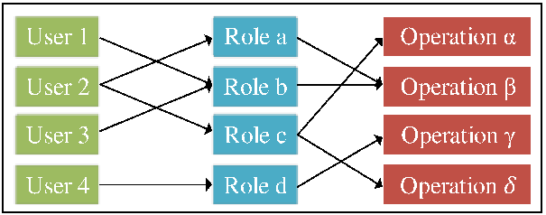

1. Use HTTPS
Always use HTTPS to ensure secure communication between clients and servers. HTTPS encrypts data in transit, preventing attackers from intercepting sensitive information.
- Enables SSL/TLS encryption
- Prevents man-in-the-middle(MIM) attacks
- Builds user trust and is favored by search engines 
2. Validate and Sanitize User Input
Input validation prevents malicious data from being processed by the application, reducing the risk of injection attacks.
- Use allow-lists (whitelists) for valid input values
- Reject unexpected characters or formats
- Use vuilt-in input sanitization libraries
3, Secure Authentication Mechanisms
Authentication is a critical part of application security. Ensure strong passwords, implement multi-factor authentication, and protect session tokens.
- Enforce strong password policies
- Implement 2FA (Two-Factor Authentication)
- Use secure cookies and short session expiration times
4. Principle of Least Privilege
Grant users and processes only the permissions they need to perform their tasks. This reduces the potential damage in case of a breach.
- Limit admin access
- Seperate user roles appropriately
- Review and audit permissions regularly 
5. Keep Software and Dependencies Updated
Outdated libraries and software may contain known vulnerabilities. Regular updates reduce exposure to known exploits.
- Apply security patches promptly
- Use tools to track vulnerable dependencies (e.g., Snyk, Dependabot)
- Audit open-source code dependencies regularly
Best Pratices Summary
| Best Pratice | Purpose | Examples |
|---|---|---|
| HTTPS | Encrypts communication | SSL/TLS certificates, secure headers |
| Input Validation | Prevents injection attacks | Regex filters, whitelist validation |
| Authentication Security | Protects uiser accounts | 2FA, hased passwords |
| Least Privilege | Minimizes impact of breach | Role-based access control |
| Software Updates | Reduces vulnerability risk | Patch management, version control |